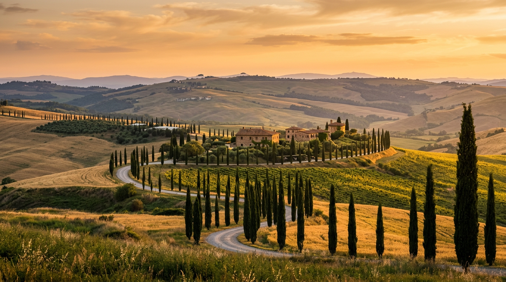
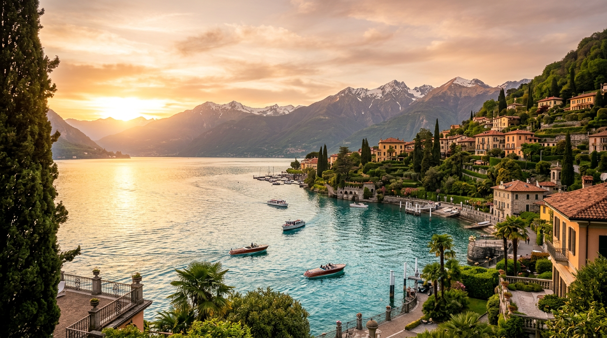
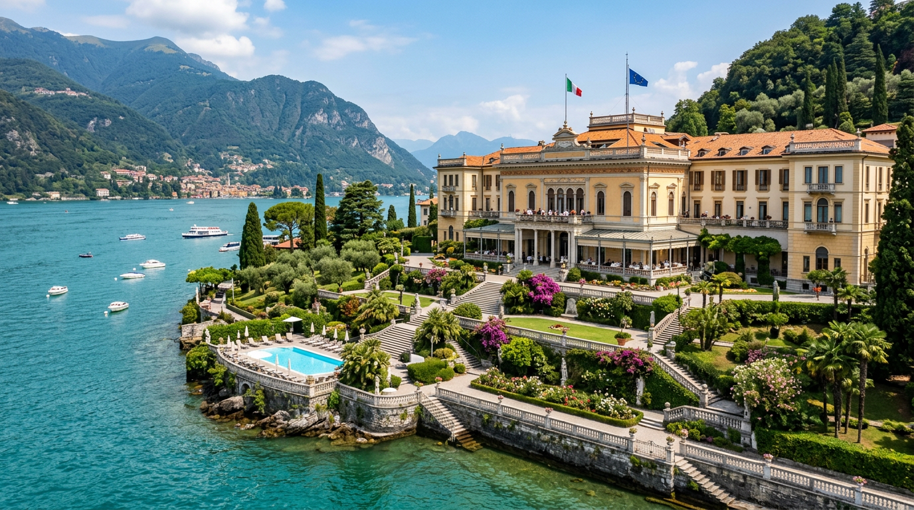
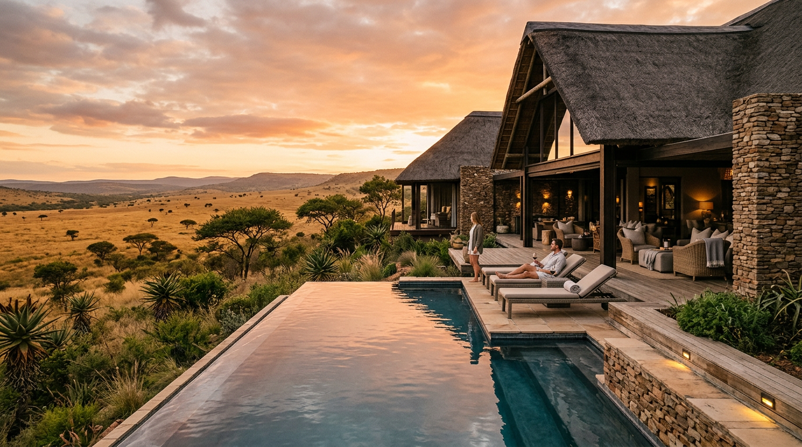

Travel Guide
The Multigenerational Holiday
Grandparents, parents, children — how to plan the trip that brings everyone together
Grandparents, parents, children — how to plan the trip that brings everyone together
Here is the truth about multigenerational holidays, and it took me years to learn it: nobody actually wants to spend every minute together. What they want is the right amount of togetherness — long lunches where the conversation drifts across three decades of family stories, mornings where the grandchildren drag their grandparents to the pool while the parents sleep in for the first time in months, evenings where everybody gathers around a table that's too big for any normal restaurant, and someone opens a bottle of wine and the eight-year-old tells a joke that makes everyone laugh until they cry. The magic isn't constant proximity. It's those moments — unscripted, unhurried, impossible to manufacture — that only happen when you put the whole family under one roof, remove the routine, and give everyone enough space to actually enjoy each other. The properties in this guide understand that balance instinctively. They're the ones our families come back from saying: "That was the best holiday we've ever had. All of us."
I plan more multigenerational holidays now than any other type of trip. It's become the single most requested format in the last three years, and I think I know why. Families are realising something that's both beautiful and a little painful: time together is finite. The grandparents who were chasing toddlers around the garden five years ago are now watching those children become teenagers who have their own social lives, their own schedules, their own gravitational pull away from the family. The window where everyone is willing, able and excited to spend a week together is narrower than anyone expects. When a family tells me they want to plan a multigenerational trip, there's almost always an unspoken urgency underneath: we need to do this now, while we still can.
The planning is where most families go wrong. Someone suggests a hotel, everyone agrees because it's easier than debating, and then you arrive and discover that the grandparents' room is on a different floor, the children have no space to play, the restaurant requires a booking that doesn't fit with naptime, and by day three the adults are bickering about logistics instead of enjoying each other. I've seen it happen dozens of times. The antidote is simple: choose the right accommodation. Specifically, choose a property where the family has a shared living space — a villa, an estate, a collection of interconnecting rooms — but where every generation also has their own private retreat. Grandparents need quiet mornings. Parents need a bedroom door they can close. Teenagers need Wi-Fi and a space that isn't their parents' room. And young children need enough freedom to run around without anyone worrying about disturbing other guests.
The other essential ingredient is flexible structure. Don't over-plan. Build in two or three shared experiences across the week — a cooking class, a boat trip, a long lunch at a restaurant someone's been wanting to try — and leave everything else open. The best multigenerational moments happen in the gaps: the afternoon when Grandad takes the children fishing while the parents disappear to a spa, the morning when the teenagers sleep late and the grandparents walk to the village market and come back with pastries and stories. Those unplanned hours are where the holiday actually lives.
The single most important booking detail for multigenerational travel: private dining. Whether it's a villa with a chef, a hotel with in-room dining for large groups, or a restaurant with a private room — the family dinner table is where the holiday comes together. We arrange private chefs for the majority of our multigenerational bookings, typically for four or five evenings of a week-long stay. The children eat early, the adults sit down later, and everybody feels looked after without anyone having to cook, clean, or argue about restaurants. It transforms the experience.

If I could only recommend one destination for a multigenerational family holiday, it would be Tuscany. Not because it's the most exotic — it isn't — but because it has something that no other destination quite matches: a pace of life that makes three generations feel simultaneously relaxed. There's nothing to rush toward. The beauty is in the landscape, the food, the light, the slowness of it all. Grandparents who find beach holidays too hot and city breaks too exhausting come alive in Tuscany. Parents who spend their lives managing schedules feel the tension leave their shoulders by the second morning. And children — children are simply happy, because there's a pool, there's pasta, there's ice cream in the piazza, and nobody is telling them to hurry up.
The key to Tuscany with multiple generations is accommodation. You need space — real space, not a hotel corridor between adjoining rooms. The best format is a private estate: a restored farmhouse or villa with enough bedrooms for the whole family, a shared kitchen and living area, a pool, and enough land that the children can disappear into the garden without anyone panicking. The grandparents have their own wing or cottage. The parents have their room. The teenagers have theirs. And then everyone gravitates toward the long table under the pergola at lunchtime, and that's where the holiday happens.
5,000 acres of UNESCO landscape with private farmhouse villas — the multigenerational estate holiday perfected
I keep coming back to Castiglion del Bosco because it solves the multigenerational puzzle more elegantly than anywhere else I know. The estate has both hotel suites in the medieval borgo and private farmhouse villas scattered across the 5,000-acre property. The villas are what make it work for families: each one is a fully restored Tuscan farmhouse with its own pool, garden, kitchen and multiple bedrooms — essentially a private home, but with Rosewood service. One family I sent last summer took two adjacent villas for three generations: the grandparents in one, the two adult siblings and their children in the other, with a shared garden between them. They had breakfast together every morning on the terrace, went their separate ways during the day — the grandparents to the wine cellar and spa, the parents to the infinity pool, the children to the Rosewood Explorers programme — and reconvened every evening for dinner in the borgo restaurant. The grandmother called me when they got home and said: "That was the first holiday in twenty years where nobody argued." I framed that email.
For families wanting a more intimate hotel setting, Belmond Castello di Casole is equally exceptional. The 10th-century castle and its surrounding farmhouses sit on 4,200 acres in the Sienese countryside, and the experience programme is built for groups: e-bike vineyard tours that grandparents and teenagers can do together, truffle-hunting excursions with the estate's own dogs, and the open-air cinema on summer evenings that somehow manages to be the moment everyone remembers most. One grandfather told me it was the first time his teenage granddaughter had voluntarily sat next to him in three years — wrapped in a blanket, watching a film under the stars, sharing a bowl of popcorn. He got a bit emotional telling me that. So did I.
We also have access to several exceptional private villas in the Val d'Orcia and Chianti regions — fully staffed estates with six to ten bedrooms, private pools, and their own vineyards or olive groves. For the largest families, we can arrange exclusive-use buyouts of smaller boutique properties, where the entire hotel becomes yours for the week. The cost is often less than you'd think when split across three generations, and the experience is incomparably more personal.

There's a particular kind of multigenerational holiday that doesn't need a passport. The grandparents don't want the stress of an airport. The toddler doesn't need jet lag. Someone has a dog they'd rather not leave behind. And honestly, on a Friday evening in June, when the light is warm and the hedgerows are blooming, driving into the Cotswolds feels like entering a storybook that everyone in the family already knows the words to. The villages are absurdly beautiful — honey-coloured stone, cottage gardens, pubs with log fires and excellent Sunday roasts. The landscape is gentle enough that an eighty-year-old and a three-year-old can walk the same path and both enjoy it. And the accommodation has quietly become some of the finest in England.
What the Cotswolds does better than anywhere else in the UK is the country house. Not the stiff, formal kind — the kind where the kitchen is the heart of the house, the garden runs into open fields, the children have Wellington boots by the door and a pond to investigate, and somebody's grandmother is doing the crossword by the Aga while the rest of the family gradually surfaces for breakfast. That feeling — relaxed, warm, unhurried, deeply English — is what multigenerational travel should feel like.
 02
02
A reimagined Jacobean manor on 90 acres — botanical spa, playground, cinema, and the most imaginative family hotel in England
Estelle Manor is the property I've been recommending more than any other in the UK since it opened. A Jacobean manor house and a Victorian botanical laboratory, reimagined as a hotel that somehow works for every member of the family simultaneously. The grandparents gravitate toward the Glasshouse spa — a botanical wonderland of treatment rooms, thermal pools, and gardens designed around the estate's heritage of medicinal plants. The parents love the restaurants (there are several, including an excellent Japanese grill) and the bars, which feel grown-up without being exclusionary. And the children — the children lose their minds. There's a cinema, an adventure playground, a games room, and outdoor activities that run from archery to bushcraft. The accommodation ranges from intimate rooms in the manor to stand-alone cottages on the estate, which is what makes it work for multigenerational groups. Book three or four cottages around one of the courtyards and you effectively have a private compound — your own front doors, your own gardens, but steps from each other. We sent a family of fourteen last Easter: great-grandparents, grandparents, two sets of parents, and five children. The great-grandmother had never stayed in a hotel she actually liked. She liked Estelle Manor.
For a more traditional Cotswolds experience, Thyme in Southrop is a village-within-a-village: a collection of beautifully restored cottages, a cookery school, a botanical spa, a pub, and a restaurant, all clustered around a medieval manor. It's the multigenerational format distilled to its essence — everyone has their own cottage, but the shared spaces (the gardens, the restaurant, the swimming pool hidden behind a stone wall) create natural meeting points throughout the day. The cookery school is the standout: three generations making fresh pasta together in a sunlit kitchen is the kind of memory that ends up in wedding speeches twenty years later.
Further north, The Newt in Somerset is the property for families who want scale. Three hundred acres of gardens, farmland, and ancient woodland, with farmhouse cottages that sleep up to eight and have their own kitchens, gardens, and fire pits. The children feed the animals on the farm, the grandparents walk the parabola walled garden (genuinely one of the most beautiful in England), and the parents explore the estate's cider press and Roman-inspired spa. It's two and a half hours from London, and for a long weekend or a half-term week, there's nowhere in England that competes.
Dog-friendly travel matters more than you'd think for multigenerational trips — leaving the family dog behind adds guilt and logistics that nobody needs. Estelle Manor, Thyme and The Newt all welcome dogs in selected accommodation, and we always check pet policies when planning. For families driving from London, the Cotswolds is also easy to combine with Bath (45 minutes south) or Stratford-upon-Avon (30 minutes north), giving grandparents a cultural day out while the children stay at the estate.

Lake Como has a quality that's hard to articulate but immediately obvious when you arrive: it makes everyone feel elegant. Something about the combination of water, mountains, faded villa walls and impeccable Italian service elevates the mood of an entire family. The grandparents feel like they're in a novel. The parents feel like they're on a film set. Even the children, who'd normally be climbing the walls of a formal hotel, are disarmed by the beauty of it — the boats on the lake, the gardens tumbling down to the water, the gelato at the café on the piazza. It's one of the very few destinations where formality doesn't conflict with family life. Como makes it work.
The lake itself is the shared experience. You don't need to plan activities or argue about itineraries — the boat is the itinerary. We always arrange a private boat for multigenerational families, typically for two or three days of the stay. You cruise the lake at your own pace, stopping at Bellagio for lunch, Villa Carlotta for the gardens (the grandparents adore it, and even teenagers are grudgingly impressed by the botanical collection), and the quieter western shore for swimming in water so clear you can see the pebbles ten metres below. The boat captain becomes part of the family — he knows where the best swimming spots are, which restaurants have a dock, and where to anchor at sunset for the view that makes everyone reach for their phone.

03The grande dame of Lake Como since 1872 — royal suites, a private lakeshore, and a tennis court the grandchildren will commandeer by day two
Villa Serbelloni is the hotel that Como was built around. It occupies the promontory at Bellagio — the point where the lake splits into its two famous arms — and the position is simply unbeatable. You see water in every direction. The hotel has been receiving families since 1872, and that heritage manifests as a particular kind of effortless service: nothing is too much trouble, nothing is rushed, and the staff remember your grandmother's room-service preferences from last year. For multigenerational groups, the royal suites on the upper floors can be configured as interconnecting apartments, with living rooms that seat the entire family for in-room dinners when nobody wants to change out of their swimming things. The pool sits in the terraced gardens above the lake, and I've lost count of the number of grandparents who've told me they spent entire afternoons there, reading and watching the boats, while the children swam and the parents explored Bellagio's backstreets. It's the old-world grandeur that makes it special — the kind of place that a grandmother might have visited herself as a child, and now she's bringing her own grandchildren, and the circle of it feels like something worth holding onto.
For families wanting more privacy and contemporary design, Passalacqua — recently crowned the best hotel in the world — offers a different kind of Como experience. Set in an 18th-century villa in Moltrasio, the property has just 24 rooms spread across three buildings: the main villa, the Palazz, and the lakeside Casa al Lago. For multigenerational groups, booking rooms across the buildings gives every generation their own base while the gardens, the infinity pool, and the remarkable included-in-everything approach (all food, all drinks, the boat, the e-bikes) create a sense of shared abundance that families love. The lakeside pool terrace, where lunch appears without anyone having to ask for it, is where I've seen three generations sit together for four hours without anyone checking the time. That doesn't happen by accident — it happens because the hotel has removed every friction point that normally makes families eat quickly, argue about the bill, or feel guilty about ordering another bottle of wine.
For the largest families — eight adults and their children — we arrange private villa rentals on the western shore. These are genuine lakefront estates with their own boat moorings, private chefs, and gardens that roll down to the water. They're rare, they book out a year ahead, and they're worth every penny. A family of sixteen stayed in a villa near Cernobbio last July and told me it was the best week of their collective lives. The grandfather swam in the lake every morning at seven. The children cannonballed off the jetty every afternoon. And every evening, the whole family sat at a table set under the wisteria while the chef served six courses and the sun set behind the mountains. Some holidays just work.
Provence is the destination that grandparents suggest and everyone else pretends to be surprised by. It's also, quietly, the most reliable multigenerational choice in Europe. The weather is almost always perfect from May to September. The food is extraordinary but unfussy — the kind of cooking that children eat without complaining and adults rhapsodise about. The landscape shifts from lavender fields to hilltop villages to the Mediterranean coast within an hour's drive. And the pace is built for exactly the kind of holiday that three generations need: slow mornings, long lunches, afternoons where the most pressing decision is whether to visit the market or stay by the pool.
The Luberon — the string of villages between Gordes, Bonnieux and Ménerbes — is where we place most families. Peter Mayle made this area famous, and while it's no longer a secret, it's retained its character. The markets are genuine (Gordes on Tuesday, Apt on Saturday), the restaurants range from Michelin-starred to a café where the owner's mother makes the soup, and the villages are close enough together that every generation can find something that suits them. Grandparents browse the antique dealers in L'Isle-sur-la-Sorgue. Parents cycle through the vineyards. Teenagers are bribed with crêpes in Bonnieux and discover, to their own surprise, that they enjoy it.
 04
04
A 16th-century bastide overlooking the Luberon valley — panoramic pool, walled gardens, and enough Provençal charm to last three generations
Perched above the Luberon with views that sweep across lavender fields to the Alpilles beyond, this is the hotel that captures what Provence is about. The building is a 16th-century bastide — all pale stone and blue shutters — and the renovation has preserved the character while adding everything a family needs: a panoramic infinity pool carved into the hillside, a Sisley spa where the grandparents disappear for entire afternoons, and a restaurant terrace where long lunches turn into long dinners and nobody minds. The rooms range from intimate doubles to spacious family suites, and for multigenerational groups we book a cluster of rooms around the garden courtyard — private enough to close the door, close enough to call across to each other. The hotel arranges lavender-field visits, vineyard tours, and cooking classes in the village that work beautifully as shared activities. One family told me the cooking class — where the grandmother, her daughter, and her granddaughter made ratatouille together with a local chef — was the single best moment of their trip. The grandmother had never cooked with her granddaughter before. She cried, happily, into the aubergines.
For larger families, the Provençal mas (farmhouse) is the ultimate format. We work with a curated collection of private estates in the Luberon, the Alpilles and around Saint-Rémy-de-Provence — six to twelve bedroom properties with private pools, boules courts, and gardens shaded by plane trees and fig trees. We pair every villa with a private chef for at least half the stay, a driver for market days and restaurant evenings, and a local guide for a half-day excursion to the lavender fields of Valensole (June and July only — the fields bloom in waves and the timing matters). The Domaine de Fontenille in Lauris is the boutique hotel alternative: an elegant estate with vineyard, gardens and a Michelin-starred restaurant, where interconnecting rooms and a relaxed attitude to children make it work for smaller multigenerational groups who want hotel service without the formality.
Provence in summer is hot — 35 degrees in July and August. Plan the day the Italian way: activity before 11am, a long lunch in the shade, rest until 4pm, then come alive again in the cooler evening. This rhythm suits every generation perfectly. The grandparents aren't forced into midday sightseeing, the children nap or swim, and the parents get two hours of quiet. Markets open early and close by 1pm, so the morning is when the family is out together. Evenings in Provence are long and golden — dinner rarely starts before 8pm, and nobody rushes you.

The Maldives might seem an unlikely multigenerational destination — it's far, it's expensive, and it has a reputation as a honeymoon cliché. But hear me out, because the families who go come back evangelists. The Maldives strips everything back to the essentials: water, sand, sky, family. There are no distractions, no traffic, no agenda. The grandparents, who might struggle with a safari vehicle or a Tuscan hill town, can walk barefoot from their villa to the restaurant on flat sand. The children snorkel off the beach and see reef sharks and turtles before breakfast. The parents, for perhaps the first time in years, actually relax — because the island is a contained world where everyone is safe, everything is taken care of, and the most complicated decision of the day is whether to have the lobster or the grilled fish.
The format works because of the villa structure. The best Maldivian resorts offer overwater and beach villas that can be booked in clusters — the grandparents in one, the families in adjacent villas, with shared decks and direct access to the lagoon. Some resorts offer multi-bedroom residences specifically designed for multigenerational groups, with their own pools, butlers, and dining pavilions. It's the ultimate combination of togetherness and privacy: everyone is on the same island, steps from each other, but behind closed doors when they want to be.
 05
05
Barefoot luxury on a UNESCO Biosphere island — the original Maldives resort, where shoes are optional and three generations reconnect
Soneva Fushi is the resort that invented the concept of barefoot luxury, and twenty-nine years later, nobody has done it better. The island sits in the Baa Atoll UNESCO Biosphere Reserve, and the villas are hidden among dense tropical vegetation — some with private pools, some with water slides into the lagoon, all with the kind of space that European hotels simply can't match. For multigenerational groups, the nine-bedroom Soneva Fushi Private Reserve is the ultimate: a private estate on its own stretch of beach, with a pool, a water slide, a spa, a cinema, a dedicated team of staff, and enough room for an entire extended family to live together without ever feeling crowded. It's essentially a private resort within a resort. But even booking individual villas works beautifully here — the island is small enough that everyone can walk to each other in five minutes, and the shared experiences (the open-air cinema, the chocolate room, the observatory where a resident astronomer shows the children Saturn's rings through a telescope) bring the family together naturally. A grandfather told me that looking at Saturn with his six-year-old granddaughter was the moment the trip became something he'd remember forever. The telescope didn't cost extra. The memory is priceless.
For families who want overwater living — which is, let's be honest, half the reason anyone goes to the Maldives — One&Only Reethi Rah is the most elegant option for multigenerational travel. The overwater villas are among the largest in the Maldives, with private infinity pools and direct lagoon access. The kids' club, KidsOnly, is outstanding (children beg to go back), and the adults-only beach on the other side of the island gives parents and grandparents genuine privacy. The island is big enough that you can cycle everywhere — and there's something joyful about three generations on bicycles, pedalling along a palm-lined path to dinner.
One alternative worth knowing: Joali Being on Bodufushi. It's a wellbeing resort that works surprisingly well for multigenerational groups, precisely because its entire philosophy is about slowing down and reconnecting. The programmes are designed around immersive experiences — herbalism, sound healing, ocean therapy — and while that might sound too specialist for children, the reality is that the activities are gentle, inclusive and fascinating for all ages. Grandparents who'd never normally try a sound bath find themselves lying on the beach with their eyes closed while their grandchildren grin beside them. It's a different kind of multigenerational bonding — quieter, more introspective — and it suits certain families perfectly.
The Maldives flight is long — typically ten hours to Malé from London, followed by a seaplane or domestic flight to the resort. For grandparents, we always book Emirates or Qatar via Dubai or Doha, with a flat-bed business class seat and a one-night stopover in either city. It breaks the journey beautifully, adds a night of adventure (the children love Dubai's aquarium and the gold souk), and means everyone arrives at the resort rested rather than exhausted. The seaplane transfer is an experience in itself — thirty minutes of flying low over turquoise atolls that look like something from a dream. Even the most travel-weary grandparent presses their face to the window.

I almost didn't include safari in a multigenerational guide, because conventional wisdom says it's too demanding for elderly grandparents and too remote for young children. But then I thought about the families I've sent to South Africa — specifically, the malaria-free private reserves — and realised it might be the most powerful multigenerational experience of all. Because safari does something that no beach, no villa, no hotel can replicate: it gives the whole family a shared sense of awe. When a herd of elephants crosses the road twenty metres from your vehicle and everyone — the eighty-year-old great-grandmother, the forty-year-old father, the six-year-old daughter — inhales at the same moment, something shifts. They're not three generations with different interests and different energy levels and different bedtimes. They're one family, watching something extraordinary, together. That moment bonds people in a way that a week at the pool simply doesn't.
South Africa makes this possible because the logistics are gentle. The malaria-free reserves — Madikwe, the Waterberg, Kwandwe in the Eastern Cape — eliminate the medical concern. The game drives are adapted for families: shorter routes for young children, flexible scheduling for grandparents, and guides who understand that a seventy-five-year-old back and a six-year-old attention span both need accommodation. The lodges offer family suites and interconnecting rooms as standard. And the post-safari combination with Cape Town gives the trip a second act that everyone loves — Table Mountain, the Winelands, Boulders Beach penguins — and enough variety that no generation feels like they're compromising.

06Malaria-free Big Five on 54,000 acres — exclusive-use homesteads where the whole family checks in and the outside world checks out
Kwandwe is the multigenerational safari destination I recommend most, because of one specific accommodation format: the exclusive-use homesteads. These are private lodges within the reserve — typically four to six bedrooms, with a private chef, a private guide, a private vehicle, and a pool overlooking a watering hole. The family has the entire homestead to themselves. There's no set schedule — you eat when you want, drive when you want, rest when you want. The grandmother who needs a lie-in isn't holding up a group of strangers. The six-year-old who wants to go back early doesn't cut the drive short for other guests. Everything revolves around your family's rhythms. Great Fish River Lodge and Melton Manor are both outstanding, but for the largest families, Uplands Homestead sleeps up to twelve and has a location on the edge of the valley that makes every sundowner feel like a private performance. We sent a family of ten last August — three generations, ages six to seventy-eight — and the grandfather, who'd been quietly reluctant about the trip, called me from the terrace on the second evening and said: "I've just watched a leopard walk past our pool. I think this might be the best holiday I've ever been on." He's booked again for next year.
After the safari, Cape Town offers something for absolutely everyone. The grandparents love Ellerman House — a Bantry Bay mansion with twelve rooms, two pools, a private art gallery, and the kind of quiet sophistication that makes them feel celebrated rather than sidelined. The children love Boulders Beach (penguins), the cable car up Table Mountain (panoramic views that even a teenager can't pretend to be bored by), and the V&A Waterfront (aquarium, market, ice cream). And the parents love the Winelands — specifically Babylonstoren near Franschhoek, a working farm with extraordinary gardens, a farm-to-table restaurant, and cottage accommodation where the children pick fruit for breakfast and the adults taste Chenin Blanc by a fireplace. For multigenerational groups, the wine estate format works beautifully: the grandparents taste wine, the children feed the goats, and everyone meets for lunch under an oak tree. We build these itineraries as ten to fourteen nights: four nights on safari, three or four in Cape Town, two or three in the Winelands. It's the trip that covers everything, and every generation goes home claiming it was "their" holiday.
The key is choosing properties that offer both togetherness and privacy — estates with multiple buildings, resorts with villa accommodation, or hotels with interconnecting suites. Plan shared experiences that work across ages (cooking classes, boat trips, gentle walks) alongside independent time for different generations. Book early, as the best large-format accommodation sells out fastest.
Tuscany and Provence work beautifully for European multigenerational trips, with villa estates that can accommodate extended families. The Maldives and Mauritius offer overwater villa resorts where grandparents can relax while children snorkel. The Cotswolds provides a no-fly option with country estates and gentle countryside. Lake Como combines elegance with space. Safari in South Africa works across all ages.
As early as possible — ideally 9 to 12 months ahead for peak season. The best multigenerational properties are large villas, private estates and interconnected suites, which are the first to sell out. School holiday dates in July, August and over Christmas are the most competitive periods. We recommend booking by January for summer and by September for Christmas.
Every multigenerational trip is different — let us design the holiday where every generation feels like the most important guest.
Start Planning Your Journey